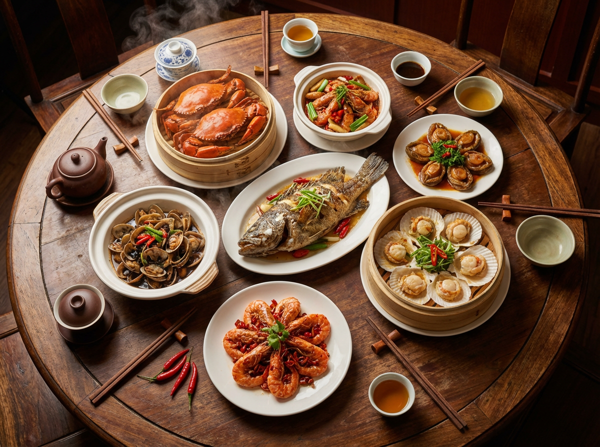

Discover Ningbo
从天一阁的书香到东钱湖的碧波，从溪口的青山到老外滩的繁华，宁波邀您共赴一场文化与自然的盛宴
天一阁、保国寺、河姆渡遗址，探寻七千年文明
东钱湖、四明山、渔山列岛，尽享自然之美
浙东抗日根据地、四明山革命纪念馆，缅怀先辈
宁波汤圆、海鲜盛宴、年糕、老字号美味
从古朴的书院到壮丽的湖光山色，宁波总有让你心动的风景
中国现存最早的私家藏书楼，亚洲现存最古老的图书馆。始建于明嘉靖年间，已有四百多年历史。
浙江省最大的天然淡水湖，素有"西子风韵、太湖气魄"之美誉。湖光山色，四季皆宜。
国家级风景名胜区，集山水之秀、文化之韵于一体。千丈岩飞瀑、妙高台云海令人陶醉。
一城好味道，尝遍宁波鲜

宁波地处东海之滨，海鲜资源丰富。从象山港的大黄鱼到梭子蟹，从鲜活的蛏子到弹牙的虾， 每一口都是大海的馈赠。来宁波，一定要去南塘老街、城隍庙一带品尝最地道的海鲜料理。
全方位旅游信息，助您轻松畅游宁波
飞机、高铁、自驾多种方式轻松到达
从星级酒店到特色民宿应有尽有
分享旅行感受，留下珍贵回忆